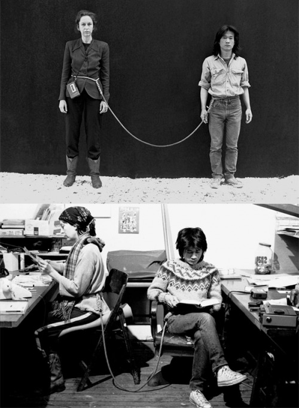

(video)
The video includes a body of text from Ursula K. Le Guin, footage of a documentary about Robert Lax mixed with microorganism movements.
Kangxi Dictionary(康熙字典), 18th—19th centuries
The Chinese character 阴(Yin)  is a place to the north of the mountain, to the south of the water, where the sun can’t reach. Yin is female. Yin is the moon. Yin is subtle, sensitive, and sometimes
even a hiding. Yin is soft outside but tough
inside. Yin is a dangerous secret weapon, generate energy underground.
is a place to the north of the mountain, to the south of the water, where the sun can’t reach. Yin is female. Yin is the moon. Yin is subtle, sensitive, and sometimes
even a hiding. Yin is soft outside but tough
inside. Yin is a dangerous secret weapon, generate energy underground.
The specific quotes from Le Guin sounds like a manifesto. The language and tone being used actually has some conflict with the Chinese concept of Yin. However, the context and the attitude of the person making the video is not any clearer, so it makes me
confused. Does the video serve as the support of Le Guin’s definition of Yin? If it is, I want to question the authorship behind the work being made.
The visual language of the Robert Lax’s footage and the clip of microorganism movements are not very consistent. The most interesting part of the video is the movements. The thing you cannot see through one’s naked eye, which is hidden, wet,
but everywhere. Dark background around the central oval — a reflection from Robert Lax drawing the circle. It is like an ovum was being bred underground. Learn from the way nature survive — those creature don’t have solid form, the organic
way of moving and shaping does have something magical. The background sound is like a gasp. A hidden spirit gasping. Those microorganism also somehow connects to the Robert Lax’s abstract minimalist poetry and has a reflection to Le Guin’s
quoting from Yevgeny Zamyatin, in We:
“Hidden, set apart in my stern counsels
Reserved for days of futurity,
I have sought for a joy without pain
For a solid without fluctuation…”
But “what would a yin utopia be?”, the name of the video is still too ambitious and vague for the content itself. Yin and Utopia are two big words that need to be interpreted more clearly, not just borrowing from a definition. If the video
serves an answer, it didn’t address this question properly enough.
(performance)
The term “performance” was being used. It means the video and the streaming projection are actually separated.
The projection angle, the sound, the editing, and the streaming quality are not optimal. And it’s really hard to see the text on the wall. If this uncomfortable experience and failure can be called “performance”, I would be very confused.
If a random setting of a projection in a personal space shows intimacy, if the lack of consideration can be an excuse, if the idleness can be forgiven by emotional appeals, then I would say that “performance” is so easy to make. I would be
sad.

Tehching Hsieh, Linda Montano, Art/Life One Year Performance 1983-1984, New York.
From 1978 to 1986, Tehching Hsieh accomplished five One Year Performances. The Rope Piece from 1983 to 1984 was a performance by Hsieh and the artist Linda Montano. The two spent an entire year bound together by an eight-foot
rope tied around
their waists. The rules of the artwork stipulated that they would not touch each other. The distance connects to privacy, freedom as well as the way humans coexist in the space. The work was so powerful. It doesn’t mean performance need to
relate to suffer, but the important part is to put efforts and thoughts in the process behind.
Patti Smith - A Reading Of Virginia Woolf
Patti Smith’s lifelong reading is also considered a performance. “I read all the time, anywhere — on my stoop, in a noisy cafe, at night in my tour bus bunk.” Those kind of performances are built on the work and motto she made before, which
needs systematic foundation and lots of preparation and accumulation to be implemented.
The charming part of performance art is that strong infectiousness of existing and practicing by oneself. No matter the gesture is big or small, intense or gentle, but the elements and the results — the quality of being live presented.
After I have watched Robert Lax and read Le Guin’s article, the video seems just like a way to present the article and the film. But the piece itself faded away.
If the short email afterwards is a statement, the words were very well infectious. It feels much stronger than the video itself, shifting the focus from the video to behind-the-scene circumstances. Is the decision to involve the viewer’s
sympathy intentional? Is it necessary? I saw “the greater spiritual forces” in Robert Lax’s. But I really wish I could also see some sentiments and care in the so-called “performance” - a streaming projection.